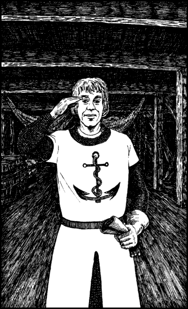

311
Paoll shows you to your cabin which is situated at the stern, next to the captain’s quarters. He suggests you rest here and offers to call you when the captain returns, but you are keen to familiarize yourself with the layout of the ship and you decide instead to accompany him as he goes about the task of rousing the sleeping crew.
The forward hold of this sailing ship has been converted into a dormitory for the ship’s complement of eighteen men. Yet as Paoll’s bellowing voice stirs them reluctantly from their hammocks, you count thirty-one men berthed here.
‘Welcome aboard,’ says a fair-haired young man whose blue surcoat is emblazoned with the scarlet anchor of the Kirlundin Isles. ‘My name’s Dryan—Sergeant Dryan of the 1st Kirlundin Marines. My men and I have been assigned a tour of duty aboard The Pride of Sommerlund for the duration of the voyage.’

You speak with Sergeant Dryan for a few minutes and learn that he and his marines have been ordered aboard the ship by King Ulnar. Dryan’s instructions are to protect the ship’s cargo from the threat of pirate attack for, in addition to yourself, The Pride of Sommerlund is carrying a valuable consignment of wheat and timber bound for Bisutan. At first you are suspicious; in his briefing Lone Wolf said nothing about an escort of marines. To determine whether Dryan is telling the truth, you probe the sergeant’s mind using your psychic skills and discover at once that he is genuine. He does not know or suspect the true purpose of your journey.
‘Well I’m glad to be sharing this voyage with you and your men,’ you say. ‘It makes me feel much safer knowing we have marines on board.’
You salute the sergeant and allow him to attend to his men. As you turn to leave, Paoll appears at the exit to the hold.
‘Capt’n Raker’s comin’ aboard, sir!’ he shouts.
You return on deck in time to see a broad-shouldered man with a golden beard and sharp blue eyes come striding up the gangplank.
‘I’m Raker,’ he says gruffly, ‘and you must be the Kai journeyman we’ve been expecting. Good, now we can be getting on our way.’ He turns to the First Mate and bellows: ‘Alright, Paoll. Set your crew to work. I want us to catch the ebb tide in one hour.’